开始
第一次尝试
后记：这篇是搭建Spark单机开发环境。这里花了亿点点时间准备单机环境。而且各种报错和没截上图，自己把自己搞混乱了，不过最终还是把Spark跑起来了。后面重新整理时，将步骤和踩坑点全部填回来了。
- 下载
Spark、Hadoop - 安装、配环境变量，查看版本
- 修改
core-site.xml、hdfs-site、mapred-site、yarn-site - 报错需要
winutils.exe - 搜索，没有对应版本
- 下载源码，准备编译环境，编译到一半发现
Github有人编译过了 - 下载后，格式化
NameNode和DataNode - 格式化失败，StackOverFlow 说是 Bug 下一个 Release 修复
- 下载暂时的
hadoop-hdfs-3.2.1.jar备份，替换 DataNode无法启动，报`Cannot lock storage The directory is already locked``
还没有写完哦~
后面继续更新不影响~
先上几张截图~
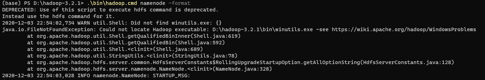
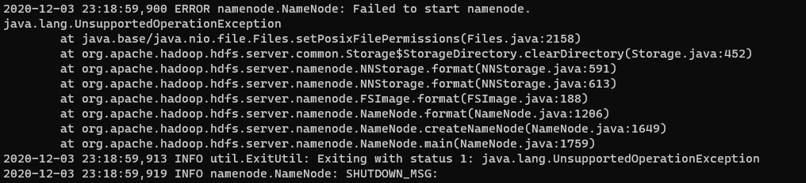
这里因为各种原因，鸽了7个月，换了个电脑，重新搞。
准备软件包和环境变量
-
下载，推荐清华镜像：https://mirrors.tuna.tsinghua.edu.cn/apache/hadoop
-
解压，配环境变量，查看版本。解压是要管理员，否则无法创建快捷方式（linux 软链接）
1
2
3
4
5
6export JAVA_HOME=D:\Java\jdk1.8.0_291
export SCALA_HOME=D:\scala-2.13.7
export HADOOP_HOME=D:\hadoop-3.3.1
export HIVE_HOME=D:\apache-hive-3.1.2-bin
export SPARK_HOME=D:\spark-3.2.0-bin-hadoop3.2-scala2.13
export PATH=$PATH:%JAVA_HOME%\bin:%SCALA_HOME%\bin:%HADOOP_HOME%\bin:%HIVE_HOME%\bin:%SPARK_HOME%\bin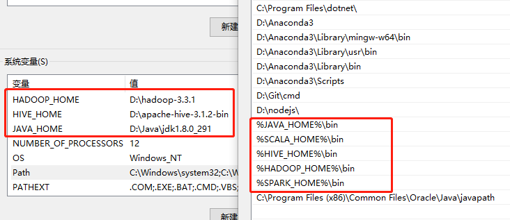
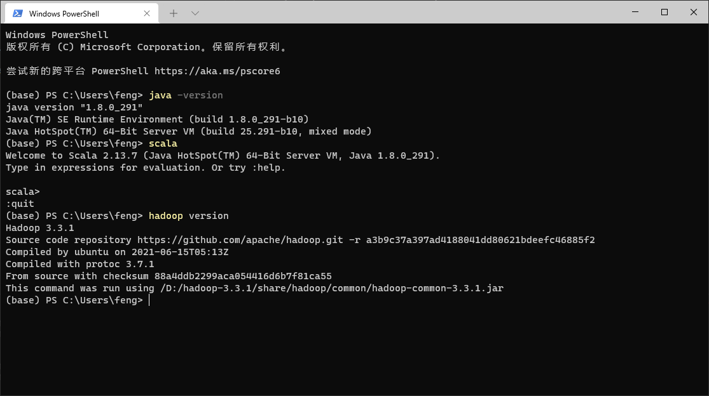
-
下载winutils.exe
在Windows下编译Hadoop后生成的文件，主要用于模拟Linux下的目录环境，一般在Github上可以找到别人编译好的，比较新的仓库有 kontext-tech。编译/下载好后，将其放在hadoop/bin下即可。
Hadoop
-
在Hadoop解压根路径创建dfs文件夹保存数据，tmp保存临时数据。dfs下创建dn和nn文件夹保存DataNode和NameNode。
-
修改
/hadoop/etc/hadoop/hadoop-env.cmd的Java环境变量为正确目录 -
接下来就是配置四个核心文件了
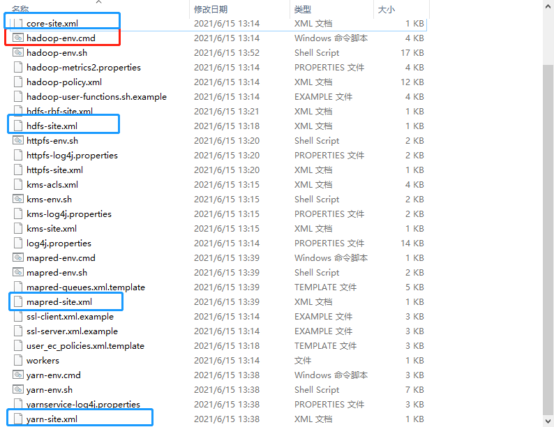
core-site.xml
1
2
3
4
5
6
7
8
9
10
11
12
13
14
15
16
17
18
19
20
21
22
23
24
25
26<configuration>
<property>
<name>fs.defaultFS</name>
<value>hdfs://DESKTOP-JRSHJQU:9000</value>
</property>
<property>
<name>hadoop.tmp.dir</name>
<value>file:/D:/hadoop-3.3.1/tmp</value>
</property>
<property>
<name>dfs.name.dir</name>
<value>file:/D:/hadoop-3.3.1/dfs</value>
</property>
<property>
<name>dfs.data.dir</name>
<value>file:/D:/hadoop-3.3.1/dfs</value>
</property>
<property>
<name>hadoop.proxyuser.feng.hosts</name>
<value>*</value>
</property>
<property>
<name>hadoop.proxyuser.feng.groups</name>
<value>*</value>
</property>
</configuration>hdfs-site.xml
1
2
3
4
5
6
7
8
9
10
11
12
13
14
15
16
17
18
19
20
21
22<configuration>
<property>
<name>dfs.replication</name>
<value>3</value>
<description>设置副本数</description>
</property>
<property>
<name>dfs.namenode.name.dir</name>
<value>file:/D:/hadoop-3.3.1/dfs/nn</value>
<description>设置存放NameNode的文件路径</description>
</property>
<property>
<name>dfs.datanode.data.dir</name>
<value>file:/D:/hadoop-3.3.1/dfs/dn</value>
<description>设置存放DataNode的文件路径</description>
</property>
<property>
<name>dfs.permissions</name>
<value>true</value>
<description>开启文件夹权限</description>
</property>
</configuration>mapred-site.xml
1
2
3
4
5
6
7
8
9
10<configuration>
<property>
<name>mapreduce.framework.name</name>
<value>yarn</value>
</property>
<property>
<name>mapred.job.tracker</name>
<value>hdfs://DESKTOP-JRSHJQU:9001</value>
</property>
</configuration>yarn-site.xml
1
2
3
4
5
6
7
8
9
10<configuration>
<property>
<name>yarn.nodemanager.aux-services</name>
<value>mapreduce_shuffle</value>
</property>
<property>
<name>yarn.nodemanager.aux-services.mapreduce.shuffle.class</name>
<value>org.apache.hadoop.mapred.ShuffleHandler</value>
</property>
</configuration> -
查看版本确认环境无误，并格式化
1
2
3hadoop version
格式化
hdfs namenode -format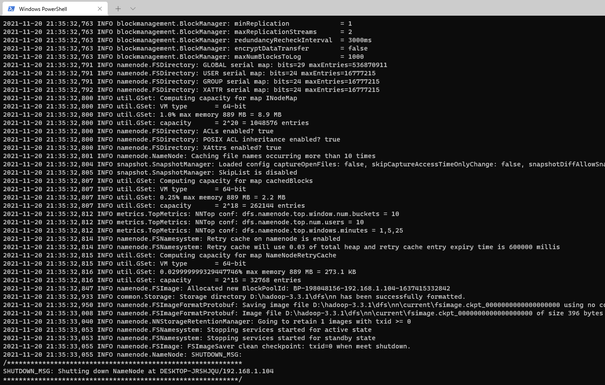
格式化完成后，会在NameNode目录生成current文件夹，里面是fsimage文件。说明格式化成功。（看日志也可以的，错误的话，会报错）
-
启动服务
在sbin里面start-all.cmd用管理员权限直接一次性启动。不用管理员权限启动的话，NodeManager会报错。（报HDFS权限问题）
四个角色（NN,DN,RM,NM）启动，且没有报错即为成功。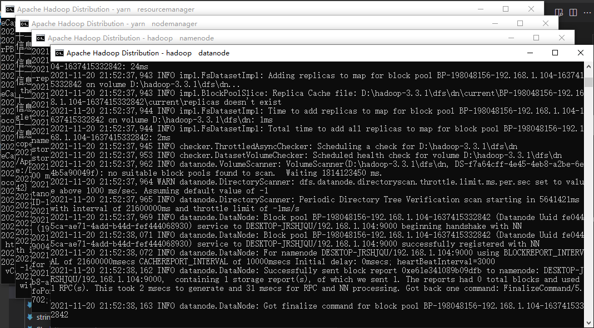
-
看看页面，敲敲命令
YARN页面地址默认是：http://localhost:8088
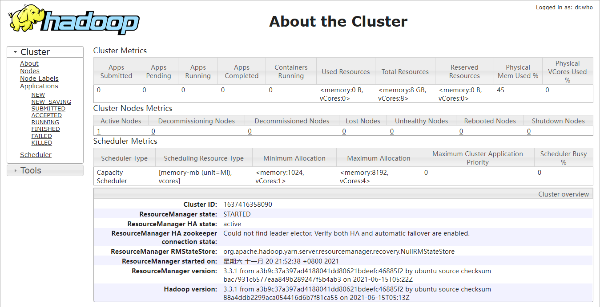
HDFS页面地址默认是：http://localhost:9870
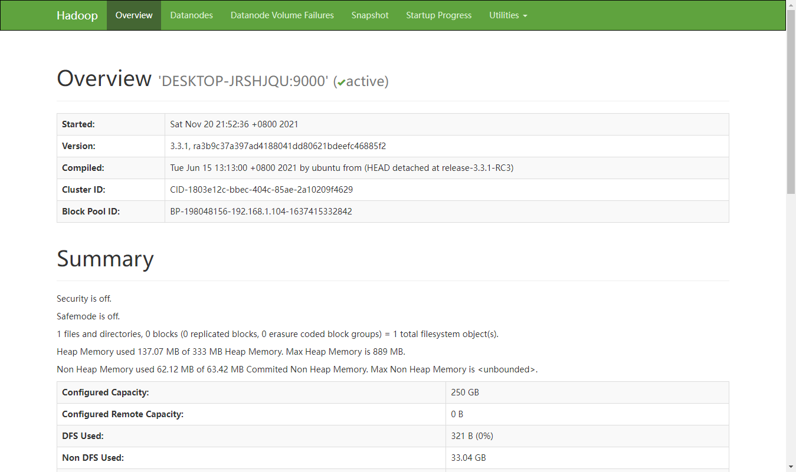
再玩玩命令行，没有任何大问题。
1
2
3
4
5
6
7
8
9
10
11
12
13
14
15
16
17
18
19
20
21(base) PS C:\Users\feng> d:
(base) PS D:\> echo "hello test" >> 1.txt
(base) PS D:\> cat .\1.txt
hello test
(base) PS D:\> hdfs dfs -ls /
(base) PS D:\> hdfs dfs -mkdir /test
(base) PS D:\> hdfs dfs -ls /
Found 1 items
drwxr-xr-x - feng supergroup 0 2021-11-20 22:27 /test
(base) PS D:\> hdfs dfs -put 1.txt /test
(base) PS D:\> hdfs dfs -ls /test
Found 1 items
-rw-r--r-- 3 feng supergroup 26 2021-11-20 22:28 /test/1.txt
(base) PS D:\> hdfs dfs -cat /test/1.txt
Hello test
(base) PS D:\> hdfs dfs -cat /test/1.txt
Hello test
(base) PS D:\> del .\1.txt
(base) PS D:\> hdfs dfs -get /test/1.txt .
(base) PS D:\> cat .\1.txt
hello test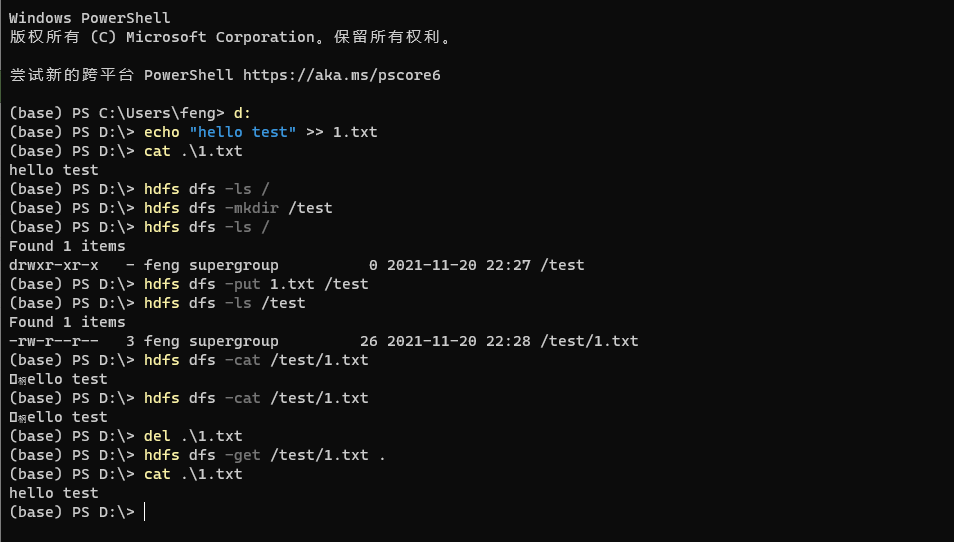
但是有个小问题，HDFS的
hdfs dfs -cat输出的Hello不全。这是因为1.txt是在Windows平台创建的，文件的编码默认是UTF-16_LE，特点是在文件的第一个字节加上一个标识符，而Hadoop生态读取时，默认为UTF-8，然后将该字符和H字母结合生成一种不存在的文字。在Hue页面或者是二进制编辑器可以看得到。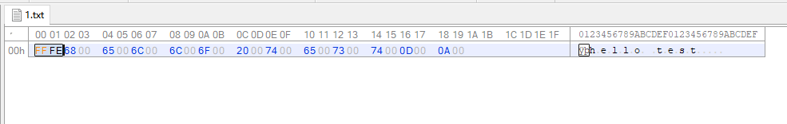
Hive
-
新版的Hive会存在一个问题，bin目录下可能会缺少若干.cmd文件，需要将文件补充回来。
-
安装MySQL不解释
下载后，解压，添加环境变量。创建data文件夹，新增配置文件。
1
2
3
4
5
6[mysqld]
basedir=D:\mysql-5.7.36-winx64
datadir=D:\mysql-5.7.36-winx64\data
port=3306
character_set_server=utf8
sql_mode=NO_ENGINE_SUBSTITUTION,STRICT_TRANS_TABLES管理员身份进入cmd
1
2
3
4
5
6
7
8
9
10
11
12安装/卸载服务，服务名默认为MySQL
mysqld -install
mysqld -remove mysql
初始化
mysqld --initialize-insecure
启动/关闭服务
net start mysql
net stop mysql
初始化用户密码
mysqladmin -u root password
登录（没初始化，默认没有密码）
mysql -u root -p1
2
3
4
5
6show databases;
use mysql;
show tables;
select host, user, authentication_string from user;
update user set host = '%' where user = 'root';
flush privileges; -
下载
mysql-connector-java包放在hive的lib目录下 -
创建Hive的HDFS文件夹并赋权（可以参考
init-hive-dfs.sh，可惜没cmd版本）1
2
3
4
5
6hdfs dfs -mkdir /tmp
hdfs dfs -chmod g+w /tmp
hadoop fs -mkdir /user
hadoop fs -mkdir /user/hive
hadoop fs -mkdir /user/hive/warehouse
hadoop fs -chmod g+w /user/hive/warehouse -
在Hive根目录，创建临时文件夹tmp，tmp下面创建
operation_logs，querylog，resources，scratch四个文件夹。 -
从模板创建Hive配置文件，并修改配置文件hive-site.xml
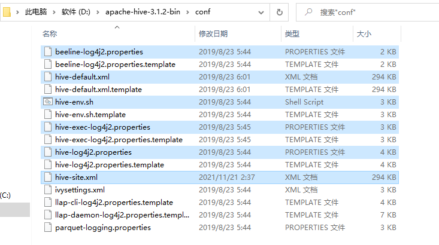
1
2
3
4
5
6
7
8
9
10
11
12
13
14
15
16
17
18
19
20
21
22# 对应配置之前新建的四个文件夹
hive.server2.logging.operation.log.location
hive.querylog.location
hive.downloaded.resources.dir
hive.exec.local.scratchdir
# hive 元数据库
javax.jdo.option.ConnectionURL
javax.jdo.option.ConnectionDriverName
javax.jdo.option.ConnectionUserName
javax.jdo.option.ConnectionPassword
# hive 客户端显示当前数据库
hive.cli.print.current.db
# hive 客户端显示查询结果的表头
hive.cli.print.header
# 启动 hive 时，如果元数据表不存在则自动创建
datanucleus.schema.autoCreateAll
# 验证 hive 的 jar 包版本和元数据库记录的版本是否一致
hive.metastore.schema.verification
# HiveServer2 Thrift service 绑定的 host
hive.server2.thrift.bind.host
# 高可用的配置，和Tez有关？
hive.server2.active.passive.ha.enable -
启动
metastore和hive cli&报错1
2
3
4
5初始化元数据
hive --service schematool -dbType mysql -initSchema
启动
hive --service metastore
hive --service hiveserver21
2
3
4
5
6
7
8
9
10
11
12
13
14
15
16
17
18
19
20
21
22
23
24
25
26
272021-11-21 03:01:46,991 ERROR conf.Configuration: error parsing conf file:/D:/apache-hive-3.1.2-bin/conf/hive-site.xml
com.ctc.wstx.exc.WstxParsingException: Illegal character entity: expansion character (code 0x8
at [row,col,system-id]: [3215,96,"file:/D:/apache-hive-3.1.2-bin/conf/hive-site.xml"]
at com.ctc.wstx.sr.StreamScanner.constructWfcException(StreamScanner.java:634)
at com.ctc.wstx.sr.StreamScanner.throwParseError(StreamScanner.java:504)
at com.ctc.wstx.sr.StreamScanner.reportIllegalChar(StreamScanner.java:2469)
at com.ctc.wstx.sr.StreamScanner.validateChar(StreamScanner.java:2416)
at com.ctc.wstx.sr.StreamScanner.resolveCharEnt(StreamScanner.java:2382)
at com.ctc.wstx.sr.StreamScanner.fullyResolveEntity(StreamScanner.java:1528)
at com.ctc.wstx.sr.BasicStreamReader.nextFromTree(BasicStreamReader.java:2818)
at com.ctc.wstx.sr.BasicStreamReader.next(BasicStreamReader.java:1121)
at org.apache.hadoop.conf.Configuration$Parser.parseNext(Configuration.java:3373)
at org.apache.hadoop.conf.Configuration$Parser.parse(Configuration.java:3159)
at org.apache.hadoop.conf.Configuration.loadResource(Configuration.java:3052)
at org.apache.hadoop.conf.Configuration.loadResources(Configuration.java:3018)
at org.apache.hadoop.conf.Configuration.loadProps(Configuration.java:2893)
at org.apache.hadoop.conf.Configuration.getProps(Configuration.java:2875)
at org.apache.hadoop.conf.Configuration.get(Configuration.java:1225)
at org.apache.hadoop.hive.metastore.conf.MetastoreConf.getBoolVar(MetastoreConf.java:1367)
at org.apache.hadoop.hive.metastore.conf.MetastoreConf.newMetastoreConf(MetastoreConf.java:1195)
at org.apache.hadoop.hive.metastore.HiveMetaStore.main(HiveMetaStore.java:8770)
at sun.reflect.NativeMethodAccessorImpl.invoke0(Native Method)
at sun.reflect.NativeMethodAccessorImpl.invoke(NativeMethodAccessorImpl.java:62)
at sun.reflect.DelegatingMethodAccessorImpl.invoke(DelegatingMethodAccessorImpl.java:43)
at java.lang.reflect.Method.invoke(Method.java:498)
at org.apache.hadoop.util.RunJar.run(RunJar.java:323)
at org.apache.hadoop.util.RunJar.main(RunJar.java:236)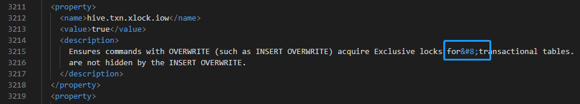
根据报错，去查找3215行配置，发现有乱码。删掉，重新启动。
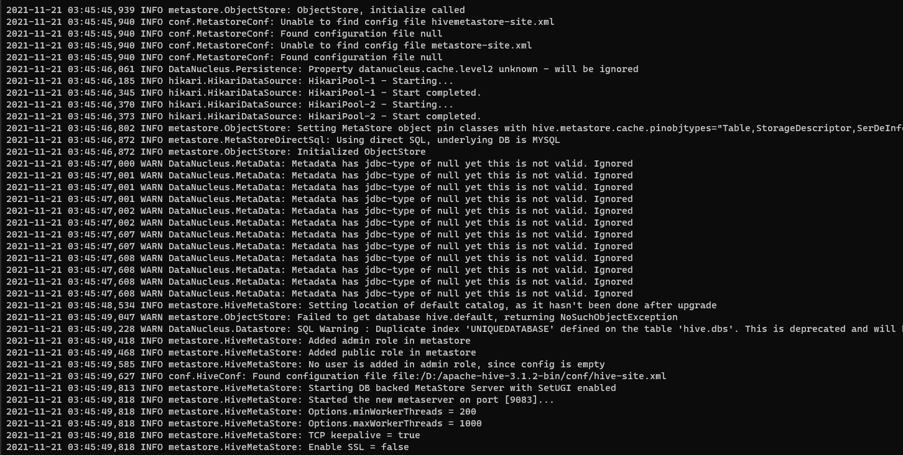
然后直接hive客户端连接metastore，会刷出信息
Connected to: Apache Hive (version 3.1.2)，但是会出现Error: Method not supported (state=,code=0)暂时无法解决，但不影响正常使用。（估计已经放弃hive cli不维护了吧。） -
启动
HS2和beeline
在配置中开启hive.server2.active.passive.ha.enable可以避免找不到Tez类保错，后面会继续集成Tez看看。HS2页面地址默认是：http://localhost:10002
beeline不能登录报错，原因是缺少jdbc的jar包。
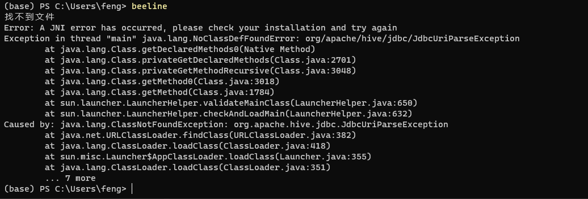
解决方法是: 把D:\apache-hive-3.1.2-bin\jdbc\hive-jdbc-3.1.2-standalone.jar放到lib文件夹后记：这个方法的确可以解决缺少jar包的问题。然后美滋滋的做下一步去了~
但是，下次在启动HS2时，启动失败了，原因是缺少jar包commons-cli。然而，commons-cli-1.2.jar确实是在目录里面的，然后再检查了hive-site和hive-env无误后，才想起可能是和hive-jdbc包有关。真正的解决办法是什么呢？去
beeline.cmd(同beeline.sh)看看就明白了，原本hive2中这个hive-jdbc-standalone的包是在lib下面的，现在hive3单独放出来到jdbc下了。然后这个脚本是从hive2里面复制的，所以会导致HADOOP_CLASSPATH和CLASSPATH环境变量缺少这个包。所以修改下目录，加上就行。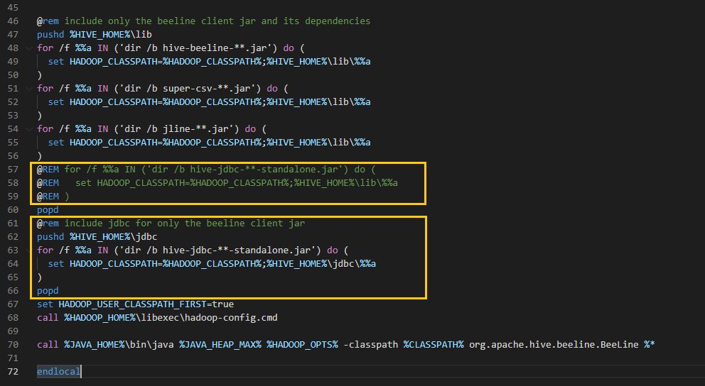
此时，没有hive用户，beeline无法登录。
如果运行hive客户端，就会发现，居然是beeline。说明hive客户端早就被删除了，而为了保留用户习惯&代码兼容性，官方加了hive转beeline这个特殊的启动方式
Connecting to jdbc:hive2://。
如果是在beeline中输入!Connecting to jdbc:hive2://进行模拟hive client连接，是不是可以越过密码呢？答案是暂时是否定的，这种情况下肯定是没有账号密码的。
但是看了hive cli的输出日志中有一段Using the default value passed in ...应该是会有个默认的账号密码？或者是动态密码？也不是不可能
后来查到Beeline支持嵌入模式(embedded mode)和远程模式(remote mode)。在嵌入式模式下，运行嵌入式的Hive(类似Hive CLI)，而远程模式可以通过Thrift连接到独立的HiveServer2进程上。说的就是这个。
1
2
3
4
5
6
7
8
9
10
11
12
13
14
15
16
17(base) PS C:\Users\feng> hive
Connecting to jdbc:hive2://
2021-12-07 22:57:30,863 INFO conf.HiveConf: Found configuration file file:/D:/apache-hive-3.1.2-bin/conf/hive-site.xml
Hive Session ID = 593ed4b4-93a3-44b9-8755-c476c556f22b
2021-12-07 22:57:31,097 INFO SessionState: Hive Session ID = 593ed4b4-93a3-44b9-8755-c476c556f22b
2021-12-07 22:57:31,640 INFO session.SessionState: Created HDFS directory: /tmp/hive/feng/593ed4b4-93a3-44b9-8755-c476c556f22b
2021-12-07 22:57:31,643 INFO session.SessionState: Created local directory: D:/apache-hive-3.1.2-bin/tmp/scratchdir/593ed4b4-93a3-44b9-8755-c476c556f22b
2021-12-07 22:57:31,655 INFO session.SessionState: Created HDFS directory: /tmp/hive/feng/593ed4b4-93a3-44b9-8755-c476c556f22b/_tmp_space.db
......
2021-12-07 22:57:58,169 INFO conf.HiveConf: Using the default value passed in for log id: 881604c0-8a89-4f59-80e3-d5116aff2439
2021-12-07 22:57:58,169 INFO session.SessionState: Resetting thread name to main
2021-12-07 22:57:58,174 INFO conf.HiveConf: Using the default value passed in for log id: 881604c0-8a89-4f59-80e3-d5116aff2439
2021-12-07 22:57:58,174 INFO session.SessionState: Updating thread name to 881604c0-8a89-4f59-80e3-d5116aff2439 main
2021-12-07 22:57:58,187 INFO conf.HiveConf: Using the default value passed in for log id: 881604c0-8a89-4f59-80e3-d5116aff2439
2021-12-07 22:57:58,187 INFO session.SessionState: Resetting thread name to main
Beeline version 3.1.2 by Apache Hive
hive> -
HDFS创建hive目录
1 | hdfs dfs -mkdir /tmp |
其中，hive用户必须要有/user/hive/warehouse和/user/{username}的写权限，否则无法进行创建数据库，创建数据表，插入数据等写操作。(查询操作还是可以的)
关于 Hive 用户
Hive 的用户取决于 Hive 采用的认证方式。Hive的认证方式在hive-site中的hive.server2.authentication配置相。分别是 nosasl, none(default), ldap, kerberos, pam, custom。
- NONE （默认，不启用认证。任何用户都有所有权限，不输入用户名/密码也行）
- NOSASL （需要任意一个用户名，不需要密码，不填写或者填写错误用户名会导致报错。）
- LDAP （集成LDAP后，用户就是LDAP用户）
- KERBEROS （用Kerberos用户登录，要
kinit或者keytab） - PAM （pam认证模块，需要用户名和密码，几乎等同于使用linux用户）
PAM(Pluggable Authentication Modules)即可插拔式认证模块，它是一种高效而且灵活的用户级别的认证方式，它也是当前Linux服务器普遍使用 的认证方式。PAM可以根据用户的网段、时间、用户名、密码等实现认证。并不是所有需要验证的服务都使用PAM来验证，如MySQL-Server就没有安 装相应的PAM文件。
- CUSTOM （可以根据自身需求对用户登录认证进行一定客制，比如将密码通过md5进行加密等。）
集成tez
暂时不集成。